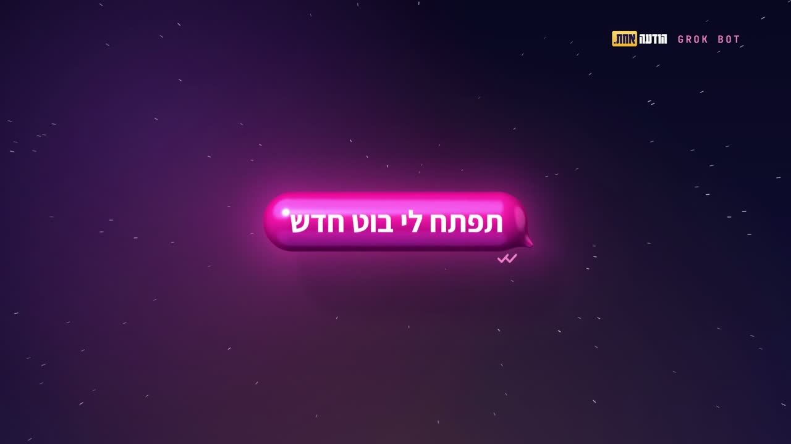
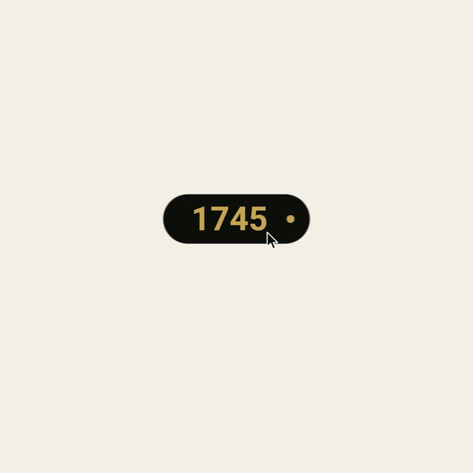
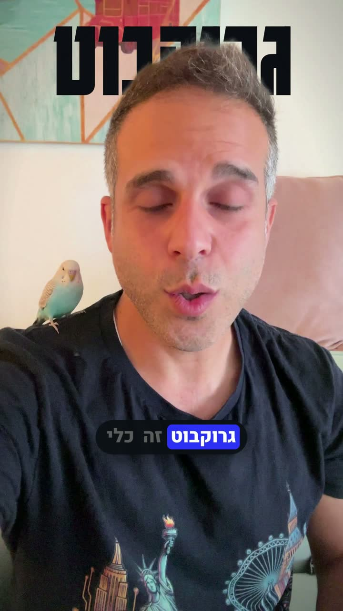

מומלץ · 12.10.2026
בוט AI רשמי לוואטסאפ
מקצה לקצה על ה-API הרשמי של Meta: הקמה, טוקן קבוע, webhook, חלון 24 השעות, עלויות ומדיניות. שלוש דקות, עם קריינות, על כל מה שצריך לדעת לפני שבונים בוט על ה-API הרשמי.
לצפייה בסרט ←מסרט של 15 שניות ועד סיור של 14 דקות. כל הגרפיקה נכתבה כקוד.

חדש בגלריהגרוק בוט: מהודעה אחת ←מקצה לקצה על ה-API הרשמי של Meta: הקמה, טוקן קבוע, webhook, חלון 24 השעות, עלויות ומדיניות. שלוש דקות, עם קריינות, על כל מה שצריך לדעת לפני שבונים בוט על ה-API הרשמי.
לצפייה בסרט ←100% קוד, בלי צילום אחד: כל פריים מצויר בדפדפן ומרונדר לווידאו.
הפתיח של הלייב ושל הקורס: הודעה אחת מתחלקת כמו תא חי לצוות של 22 בוטים, עם קריינות וחומרים אמיתיים מהצוות שלי.
seek(t) · Gemini TTS
הטיסה מתל אביב ללאס וגאס, לכנס של AWS: מסלול אמיתי, זריחה בזמן העצירה בניוארק, וכדור לדים שמתגלה כ-Sphere.
seek(t) · three.js
15 שניות שקוראות לצאת להצביע בבחירות לכנסת ה-26: פתק אחד נכנס לקלפי, והמסך מוצף בתכלת.
seek(t) · DOM
סרט מותג עליי, באנגלית ובעברית: 92 ביטים, תשע סצנות, ולולאה שנסגרת בדיוק על הלוגו.
seek(t) · Canvas
סרט מוצר לאפליקציית כושר בדיונית: הבעיה, סיור במסכים, מתאמנים שמצוירים בקוד, והוכחה.
seek(t) · three.js
סרט ההשקה של קיט המושן: תיבת פרומפט זוהרת, קרוסלה בתלת־ממד, וטלפון ולפטופ מעל הים בשקיעה.
seek(t) · three.js
15 שניות מפרומפט לסרט: מקלידים נושא, לוחצים, וטלפון עולה מעל הים.
seek(t) · three.js
הסרט הראשון שעשיתי בשיטה של zero: נקודה אחת, seek(t), ושבעה כללים, כל אחד מודגם בתנועה שלו.
seek(t) · Canvas
סרט ההשקה של הסקיל שלי לבימוי וידאו: סוכן אחד שהופך רעיון לסרט עם HyperFrames, Lottie ו-Manim.
HyperFrames
פרומפט אחד בטרמינל, והסוכן בונה סרט: צבעי הפניקס, HTML שמתרנדר לווידאו, ושלושה מנועים בפריים אחד.
HyperFrames
טיזר על השאלה מה קורה כשסוכן אחד בונה את כל הסרט, מהמותג ועד הפריים האחרון.
HyperFrames
נושא אחד, מוסבר מאפס, עם גרפיקה שמדגימה כל רעיון. רובם עם קריינות.
כל השיטה בסרט אחד: פריימים, קפיצים, מורף, ביט ורינדור, עם קריינות ומוזיקה שנכתבה למבנה של הסרט.
seek(t) · ElevenLabs
הסיפור של העריכה עצמה: איך Claude Code תמלל, גזר אותי מהרקע, ומילא סרטון סלפי בהוכחות אמיתיות.
three.js · Gemini TTS
האוטומציה שגרוק בוט בנה לי, שבה כל פוסט בערוץ הטלגרם הופך לסטורי באינסטגרם, בשש מערכות בתלת־ממד.
Remotion · three.js
לקוחה אחת כותבת שהטיסה בוטלה, ארבעה 'סוכנים' מקבלים את ההודעה, ורק אחד מהם באמת סוכן.
three.js · Gemini TTS
עשר החלטות שעושים לפני שורת הקוד הראשונה בפרויקט AI: משימה, סוכן או תהליך, מודל, RAG, זיכרון ואבטחה.
three.js · Gemini TTS
מקצה לקצה על ה-API הרשמי של Meta: הקמה, טוקן קבוע, webhook, חלון 24 השעות, עלויות ומדיניות.
three.js · Gemini TTS
שני harnesses לסוכני קוד, ראש בראש: 4 כלים מול 31, השיטה Hashline, ובנצ'מרק על אותו מודל.
GSAP · ElevenLabs
סוכן שעובד יפה למשתמש אחד, ומה נשבר כשעשרת אלפים מגיעים יחד: sessions, זיכרון, כלים ועלויות.
GSAP · ElevenLabs
נוירון מלאכותי אחד, אלפים בשכבות, ואימון שבו כל טעות מכווננת את המשקלים.
HyperFrames · Lottie
רשת נוירונים מול המוח האנושי ב-37 שניות: מה מתעדכן באימון, ומה קורה כשהאימון נגמר.
HyperFrames · Manim
ספר התניא ותולדות חב״ד, בחמישה סרטים ובחמישה סגנונות שונים.
נקודה אחת זוהרת מציירת את אדמו״ר הזקן, וממשיכה בלי להתנתק לספר, לציר זמן, לגלובוס ול-770.
seek(t) · Canvas

0:36קו זהב אחד שעובר בין שבעת נשיאי חב״ד, מ-1745 ועד 770, עם תמונות ממקורות פתוחים.
seek(t) · WebGL2
ספר תלת־ממדי שנפתח על הדרופ, ושמונה רעיונות מהתניא, כל אחד עם הציטוט והפרק שלו.
seek(t) · three.js
גרסת פסטל בתלת־ממד: מאזניים, שני מלכים שנלחמים על עיר קטנה, והבינוני.
פרק שלם על שתי הנפשות, בעריכת מגזין: 70 עמודים ממוספרים, מרקר ליים, מפת גוף ועיר קטנה.
GSAP · ElevenLabs
הצילום שלי, והגרפיקה מעליו בקוד: כתוביות מילה אחרי מילה, טקסט שעובר מאחוריי ואובייקטים בתלת־ממד.
שלוש דקות על הצילום שלי, עם כתוביות מילה אחרי מילה, כרטיסי הוכחה מהבוטים ומקור לכל טענה.
HyperFrames · Whisper

3:02סלפי של שלוש דקות מהספה הפך לריל: כתוביות מילה אחרי מילה, טקסט מאחוריי וכרטיסים עם הוכחות מהאפליקציה.
HyperFrames
בכל פריים אני גזור מהרקע, כך שמילים ענקיות ואובייקטים בתלת־ממד עוברים מאחוריי ולא מסתירים את הפנים.
three.js · Whisper
סיור מלא באפליקציית הדסקטופ של GitHub Copilot, עם כתוביות ופתיח שנבנו בקוד.
HyperFrames · Whisper
איך בניתי ב-Claude Desktop אתר שבו דמות עוקבת אחרי העכבר, בטכניקה שנקראת Video Scrubbing.
HyperFrames · Whisper
השיטה מפורקת לפירורים, עם קטלוג של אלמנטים מוכנים ומילון של כל המונחים.
היצירות של אחרים שמופיעות בסרטים ודורשות ייחוס.
שאר המוזיקה והאפקטים בסרטי הקוד הם מ-Mixkit (רישיון Mixkit) ומ-Kenney (CC0), או שנוצרו במיוחד לסרט. תמונות של אחרים בסרט "שבעה דורות" מוצגות לפי הרישיון שלהן, ופירוט מלא של כל תמונה ועובדה נמצא בדוח המקורות של הסרט.